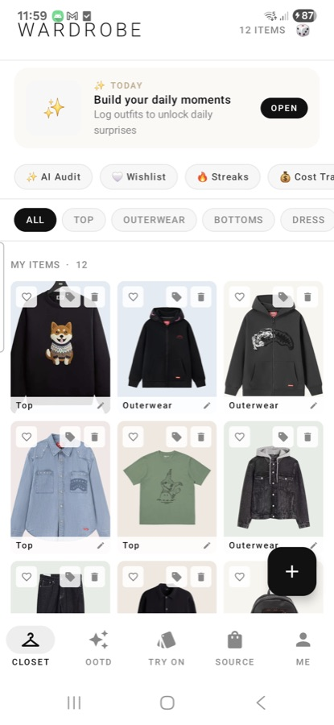
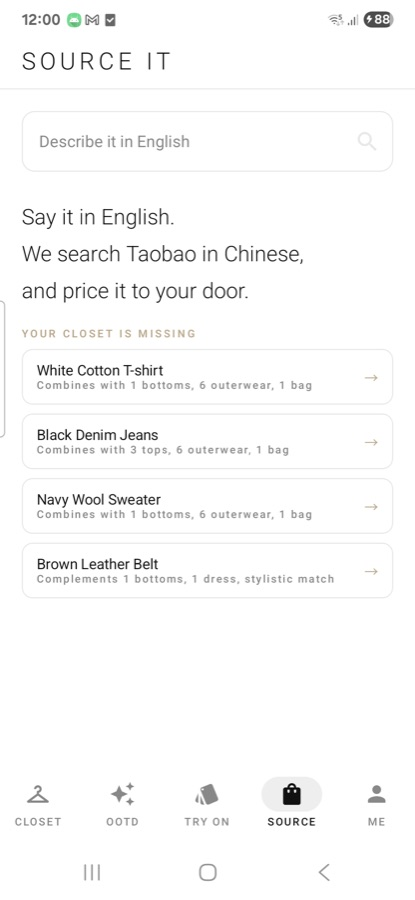
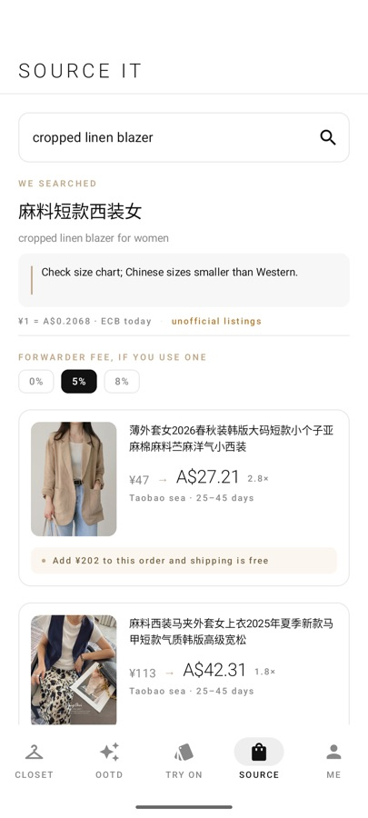
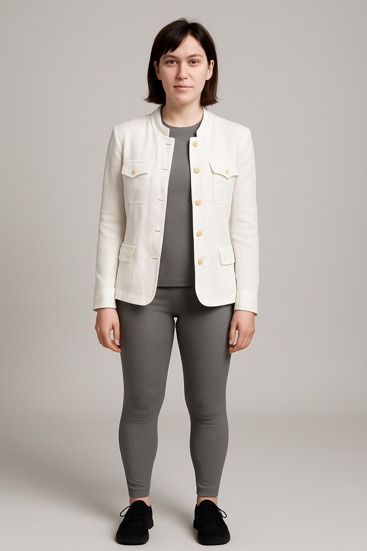
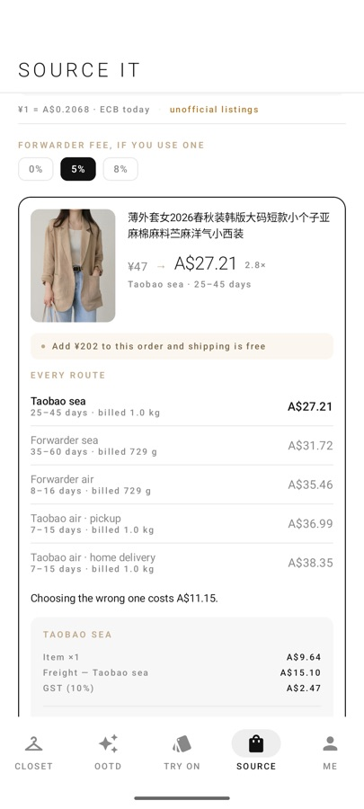
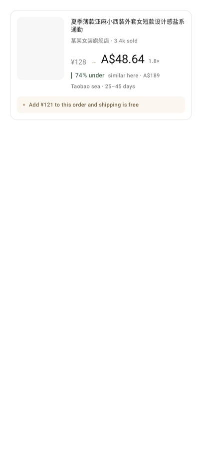
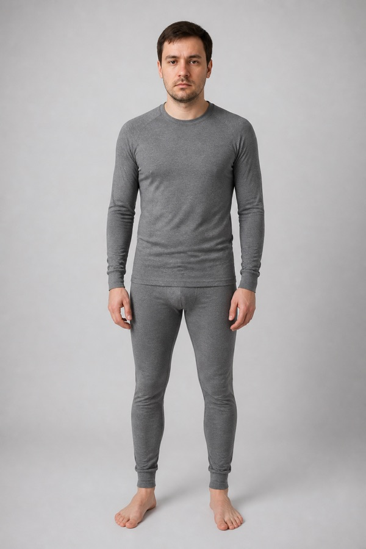

tryMeOn is an Android wardrobe assistant for shoppers in Australia. It recommends what to buy from the clothes you already own, works out what a cross-border listing actually costs delivered to your door in AUD, and shows the garment on you before you spend anything.
The problem
A shopper in Sydney looking at an overseas marketplace sees a number in yuan. What they will actually pay includes domestic shipping inside China, a forwarding agent's service fee, international freight that is billed on the parcel's volume rather than its weight, GST, and their card's foreign transaction margin. None of that is on the listing page, and the gap between the two numbers is routinely two to three times.
Most people either overpay because they guessed low, or never order at all because they could not tell. tryMeOn does that arithmetic before the decision, not after the parcel arrives.
What it does




How the price is worked out
A real quote from the app for a linen blazer listed at ¥128 — A$26.49 converted, and A$48.64 delivered. The freight line is the one that surprises people: the parcel is light but bulky, so it is billed on 1.5 kg of volume rather than the 400 g it weighs.
| Item | A$26.49 |
| Freight — billed on 1.5 kg of volume, not the 400 g it weighs | A$16.56 |
| GST (10%) | A$4.30 |
| Card FX & fees (3%) | A$1.29 |
| Landed at your door | A$48.64 |
The app quotes every shipping route it knows — the marketplace's own consolidated shipping and third-party forwarders, by air and by sea — and names the cheapest, because the spread between them is often larger than the item.


Try-on
The app builds one full-body model from the user's photo and keeps it, then dresses that same model for every garment. Generating the person once is what makes two try-ons comparable — and it means the wait happens once rather than on every item.

How affiliate links are used
Status
The app is a native Android application in active development, running on real devices today — every screenshot on this page is the app itself, not a mockup. It targets Google Play, with Australia as the launch market. Sign-in, cloud sync, and in-app purchase are implemented; third-party API credentials are held server-side rather than in the app package.
Built by an independent developer in Australia. Contact: github.com/billywang1997/tryMeOn